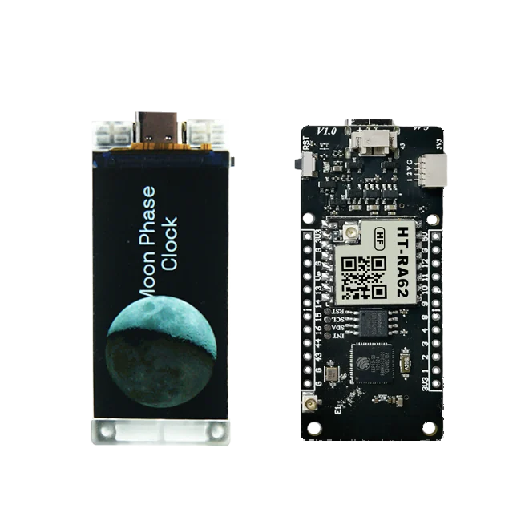

display and LoRa workbench
Heltec Vision Master T190 ESP32-S3 LoRa firmware
Use Vision Master T190 when a wide 1.9-inch color display, two physical buttons, USB-C, battery support and optional onboard SX1262 radio fit the bench task. The ESP32 Bit Pirate implementation gives the board a dedicated display, input and Wi-Fi path while keeping serial and browser terminal workflows available.

Board-specific guide derived from the VisionMasterT190 implementation and official Heltec hardware references.
hardware references
Vision Master T190 pinout and board photos
Four official references for header wiring, board orientation, optional radio identification and the supplied accessories.
compatibility
Vision Master T190 board overview
The board implementation is display- and button-aware. The optional LoRa hardware remains variant-dependent, so confirm the product model before planning a radio workflow.
source-derived behavior
How ESP32 Bit Pirate uses the T190 hardware
These details come directly from the VisionMasterT190 board implementation in src.zip.
The display uses MOSI GPIO48, SCLK GPIO38, CS GPIO39, DC GPIO47, RESET GPIO40, backlight GPIO17 and active-low display power on GPIO7.
The display config selects SPI3_HOST, no MISO and useSharedSpi = false, keeping its bus separate from normal shared-SPI workflows.
GPIO0 produces OK and GPIO21 produces Right. Both use internal pull-ups and edge-detected presses; holding a key does not repeatedly generate events.
Boot shows the Bit Pirate logo, waits up to three seconds for a button and clears the display. Wi-Fi client status is rendered directly on the TFT.
practical tasks
Vision Master T190 supported workflows
The wide screen makes traces and RF activity visible, while USB serial and Wi-Fi terminal modes remain the main text interfaces.
Use the TFT for board selection, status, logic or analog traces, frequency activity and LoRa waterfall output.
Use USB Serial or the browser Web Serial Terminal for the complete CLI, prompts and long command output.
Use AP mode or saved client credentials. The T190 client path reads ssid and pass from the wifi_settings NVS namespace.
On radio-equipped variants, use the SX1262 shell for profile configuration, RSSI, CAD, packets, scans, captures and Meshtastic frame analysis.
Vision Master T190 pin mapping and wiring notes
The ESP32 Bit Pirate display path consumes GPIO7, GPIO17, GPIO38, GPIO39, GPIO40, GPIO47 and GPIO48. Its physical input path consumes GPIO0 and GPIO21. Do not assign those pins to generic buses while the board display and buttons are active.
Heltec's header map exposes power, ground and GPIO including GPIO1–4, GPIO8–16, GPIO43 and GPIO44. GPIO1/GPIO2 also serve the QuickLink I2C connector, while GPIO43/GPIO44 carry UART0 TX/RX.
Use 3.3 V-compatible logic and verify the exact header orientation before wiring. On a LoRa-equipped T190, GPIO8–14 are already connected to the onboard radio and should not be treated as free GPIO.
onboard SX1262 map
Use the correct radio variant and pins
The product name alone does not guarantee an onboard radio. Match the hardware variant, antenna and regional frequency before entering LoRa mode.
The current LoRa setup explicitly prompts for every SX1262 pin and the radio profile. Confirm the onboard pin map instead of accepting generic external-module defaults blindly.
useful pages
Vision Master T190 useful next pages
Connect the board-specific implementation to LoRa, serial, GPIO, I2C, browser tools and official hardware references.
Protocol modes
Configure the radio, observe RSSI and CAD, exchange packets and inspect captures.
I2CUse the QuickLink GPIO1/GPIO2 path for compatible 3.3 V sensors.
UARTPlan serial links around the board's fixed display, button and radio signals.
DIO/GPIOUse exposed pins only after excluding reserved onboard connections.
LoRa recipes
Set frequency, bandwidth, spreading factor and the complete modem profile.
Receive a LoRa packetUse RSSI, CAD and packet receive with the onboard radio variant.
Scan LoRa activityUse the T190 display for frequency visualization and waterfall output.
Record and load .lora filesPreserve a packet and its radio profile in LittleFS.
Tools and sources
Drive the complete Bit Pirate CLI from a compatible browser.
SX1262 module referenceUnderstand the radio profile, commands and transceiver behavior.
Official Heltec product pageCheck current variants, specifications, pin map and downloads.
Official T190 datasheetOpen the hardware pin definitions, RF bands and electrical specifications.
board-specific answers
Vision Master T190 FAQ
Quick answers about firmware support, screen pins, buttons, board variants and the optional SX1262 radio.
Is Heltec Vision Master T190 supported by ESP32 Bit Pirate?
Yes. The implementation includes a dedicated DEVICE_VISION_MASTER_T190 board path with ST7789 display, physical-button input and board-specific Wi-Fi client behavior.
Does every Vision Master T190 include an SX1262 LoRa radio?
No. Heltec sells a version without LoRa plus LF and HF radio variants. Confirm the exact model, RF band and antenna before using LoRa mode.
Which buttons does ESP32 Bit Pirate use?
GPIO0 maps to OK and GPIO21 maps to Right. Both inputs use internal pull-ups and edge-detected presses.
Which pins connect the optional SX1262?
The official pin map assigns SCK GPIO9, MISO GPIO11, MOSI GPIO10, NSS GPIO8, RESET GPIO12, BUSY GPIO13 and DIO1 GPIO14. Confirm these values in the LoRa setup prompts.
Is raw LoRa mode on T190 the same as LoRaWAN?
No. ESP32 Bit Pirate raw LoRa mode directly configures and exchanges radio packets; it does not provide LoRaWAN joining, sessions, gateways or network-server behavior.
How do I enter download mode?
With USB connected, hold BOOT, press and release RST, then release BOOT.

source project
Vision Master T190 inside ESP32 Bit Pirate
This page connects the board-specific C++ implementation to the physical T190 display, buttons, Wi-Fi path, exposed headers and optional LoRa radio.